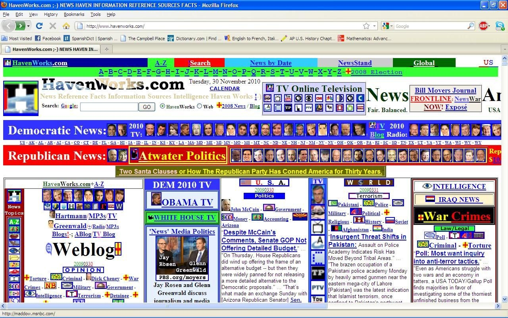
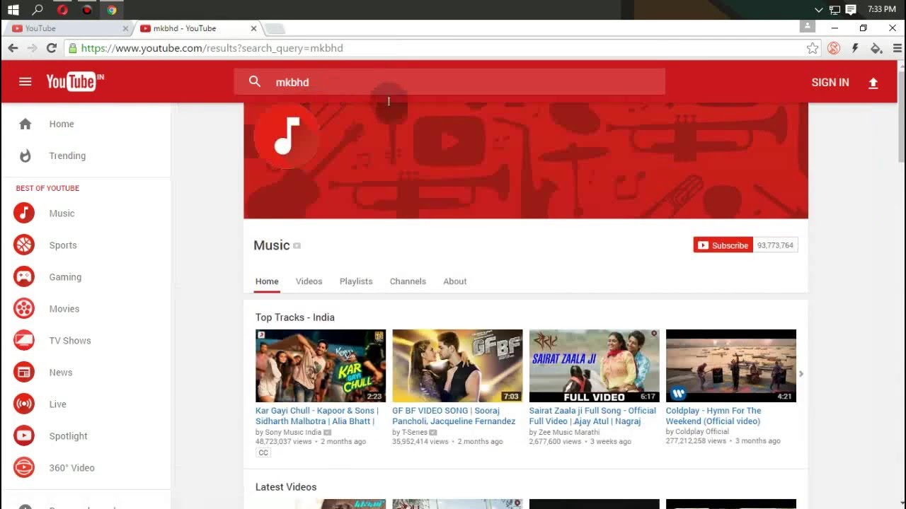

¿Qué es la usabilidad web?
La usabilidad web es en pocas palabras la facilidad que tiene el usuario al navegar y acceder por la página web.
Principios de la usabilidad web
- Eficiencia
- Satisfacción
- Accesibilidad
- Fácil navegación
- Contenido
- Diseño
- Velocidad de carga
- URL
- Interacción
La eficiencia se refiere a la capacidad que tiene la pagina de complir las necesidades del usuario
Ejemplo: Ver la descripcion de un producto
La satisfacción es el grado en el que el usuario considera que su experiencia de navegación fue, sencilla rápida y eficiente
Ejemplo: Una página bien organizada y con un diseño agradable
La accesibilidad es la capacidad que tiene la página de adaptarse al dispositivo que lo está desplegando y las necesidades especiales del usuario
Ejemplo: Una página hecha para ordenador y celular, con las imágenes con descripciones correctas para personas no videntes
La fácil navegación es la combinación de un diseño de página inteligente, y una presentación agradable, estos dos factores combinados dan lugar a una navegación fluida
| Difícil navegación | Fácil navegación |
|---|---|
|  |
Al igual que los dos anteriores puntos, es importante que el contenido de la pagina sea claro con los nombres de lo que se quiere presentar, un nombrado confuso puede llevar
a confundir a los usuarios con lo que buscan, por ello es primordial usar palabras clave
Ejemplo: Las secciones de una pagina debidamente nombradas de acuerdo a lo que contienen
El diseño de una pagina debe ser agradable y consistente
Ejemplo:

La velocidad de carga contribuye en gran medida a la experiencia del usuario, entre más rápido mejor
Los URL deben ser lo mas legibles para el publico general para no ser confundidos con enlaces maliciosos, ademas de no estar caidos o rotos
Esto aplica tanto a la responsividad de la página como a la interacción con otros usuarios o con los propietarios de la web
Ejemplo: Una página donde lo que parece interactuadle tiene una acción, y métodos de contacto con soporte técnico
Importancia de la usabilidad web
La usabilidad ayuda a que la página sea usada por más tiempo por los usuarios y que sean más propensos a volver, además de
ayudar con el posicionamiento de la página con respecto a otras o aumentar la probabilidad de que se concreten compras en la página.
En general, la usabilidad de una página web es sinónimo de su calidad.